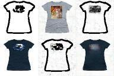
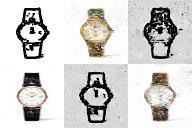
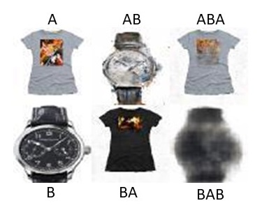

We conducted 3 experiments as discussed in the Experiments section. Our results are can be found here.
It has two folders in it. First, zeroth epoch shows the results in the early stage of training while the last epoch shows outputs after the last epoch.
We trained our network for 1000 epochs. We used AWS Deep Learning AMI (Ubuntu) Version 22.0 (Ubuntu 16.04.6 LTS (GNU/Linux 4.4.0-1109-aws x86_64v)
for training our network.
As shown in the methodology section,
Image A refers to the input image from domain A.
Image AB is the output of the Generator conditioned on image A.
Image ABA is the reconstructed image A from AB. The reconstruction loss is computed by comparing image ABA with A.
Image B is input image in domain B.
Image BA refers to the generated image given image B as input.
Image BAB is the reconstructed image as reconstruction loss is computed by comparing image BAB with B.
Experiment 1 : edges2tshirts
In this experiment our model learns to generate T shirts from edges and to generate edges from Tshirt images. In this case, domain A refers to the edges of Tshirts and domain B is T shirt images.
Experiment 2 : edges2watches
In this experiment our model learns to generate wrist watches from edges and to generate edges from wrist watch images.
In this case, domain A refers to the edge of watches and domain B is wrist watch images. Experiment 3 : tshirts2watches
In this experiment our model learns to generate T shirts from wrist watches and to generate wrist watches from Tshirt images. In this case, domain A refers to Tshirts and domain B is watches
